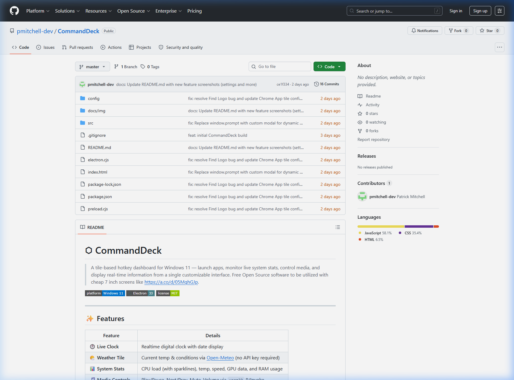

A sophisticated tile-based hotkey dashboard designed for secondary hardware integration, monitoring live system stats and orchestrating workflows.

Monitor CPU load (with sparklines), temperature, speed, GPU data, and RAM usage in real-time from a dedicated 7-inch hardware screen.
Configure custom tiles to launch specific applications, paths, or web URLs. Instantly switch between professional environments.
Unified Play/Pause, Next, and Volume controls mapped to system-wide media sessions, keeping your primary monitor focused on work.
Pull current conditions and temperatures via Open-Meteo API without the need for private API keys, displayed on a clean interface tile.
| Feature | Implementation | Benefit |
|---|---|---|
| Telemetry Pipeline | Electron IPC + psutil | Real-time system health monitoring |
| Multi-Device Grid | TCP/IP Event Streaming | Coordinated control across hardware |
| Workflow Hotkeys | Global system hooks (WinAPI) | Instant execution from tiles |
| Dynamic UI | CSS Grid + Framer Motion | Smooth, interactive control surface |